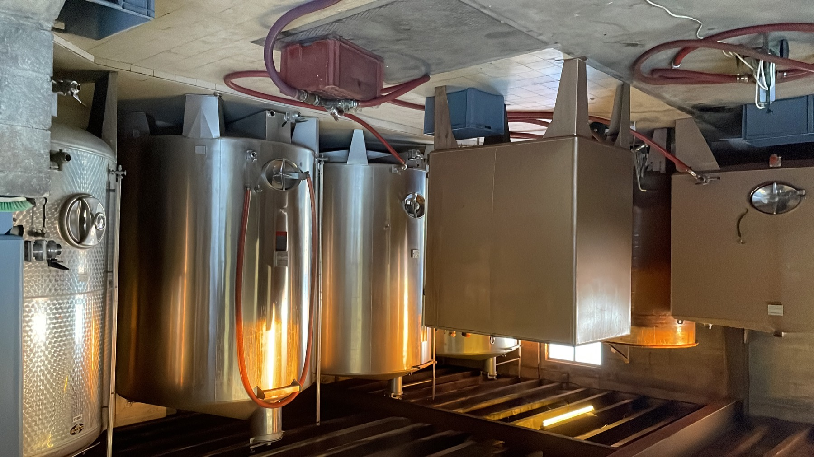

Article de la maison Champagne Christelle Phlipaux
De la vigne à la bulle : comment naît un champagne
Un champagne, ce n’est pas “juste” un vin pétillant : c’est un vin de terroir, élaboré avec précision, puis transformé en bouteille par une seconde fermentation. À Channes, au sud de la Champagne, notre vignoble profite d’une côte plein sud et d’un ensoleillement idéal.
1) Le terroir : la base de tout
Sur notre domaine (un peu plus de 2,3 hectares), la Côte des Bar offre un sol kiméridgien — une signature géologique qui apporte caractère et finesse. C’est ce socle qui donne le style : équilibre, fraîcheur, expression du fruit.
2) Des pratiques proches de l’environnement
Notre démarche de viticulture durable vise la cohérence : zéro désherbant, zéro insecticide et une utilisation raisonnée des fongicides. L’objectif : préserver les sols, la vigne, et le vivant.
3) Vendanges, pressurage et vinification
À la vendange, on cherche la maturité juste. Après le pressurage, le jus fermente pour devenir un vin tranquille (sans bulles). C’est à ce stade que se construisent les premiers équilibres : tension, fruit, structure.
4) L’assemblage : l’art de la maison
Chez nous, l’assemblage met en valeur une trame Pinot Noir (70%) et Chardonnay (30%). Le Pinot Noir apporte la rondeur et la matière ; le Chardonnay apporte fraîcheur et élégance.
5) Prise de mousse & vieillissement en cave
La “prise de mousse” est la seconde fermentation en bouteille : c’est elle qui crée les bulles. Ensuite, le temps fait son œuvre. Notre Brut Tradition vieillit au minimum 15 mois en caves, pour développer finesse, texture et harmonie.